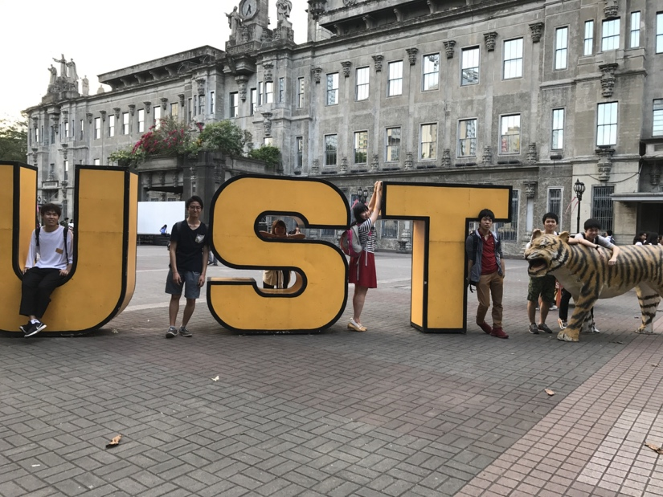
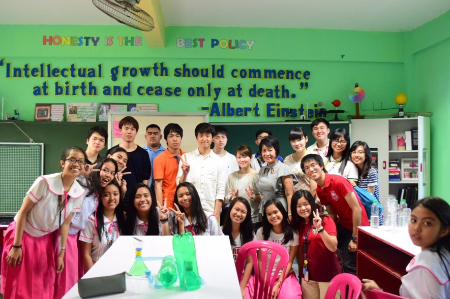
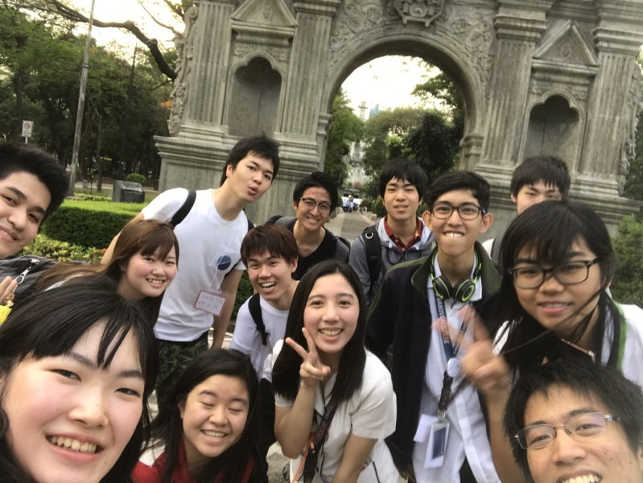

“フィリピン”と聞いてどんなことを思い浮かべますか？
“バナナ”と答える人が大半ではないでしょうか。最近では“ドゥテルテ大統領”と答える人も多いかもしれません。しかし、「フィリピンとはこういう国だ」という明確なイメージを持っている人は少ないでしょう。
フィリピンは東南アジアで唯一のキリスト教国で、キリスト教徒が全人口の90％を占めています。他の東南アジアの国々と比べ、西洋色が強い雰囲気や文化が特色です。
また、スペインに占領された時代もあればアメリカに占領された時代もあり、フィリピンでは様々な人種・文化が混じり合っています。だからこその面白さがこの国にはあります。現地へ行き、自分の眼で見て肌で感じて初めて見えてくるフィリピンの良さがきっとあるでしょう。さあ、一緒にこの国を探ってみませんか？
JPSIは結成から約４年目を迎えるチームです。活動拠点はマニラで、提携しているのはマニラの聖トマス大学のTNK（トマーシャン日本協会）という団体です。

JPSIは2017年の春渡航にて新しくTNK（トマーシャン日本協会）と提携を結ぶことに成功しました。また同渡航にて、現地の小学校での環境プロジェクトと、交通問題に関連したワークショップをTNKのメンバーと共に実施しました。

提携先のTNK（トマーシャン日本協会）という団体は、日本にとても興味・関心があり、我々を非常にアットホームな雰囲気で歓迎してくれます。彼らのノリの良さは東南アジア随一で彼らはとても陽気であり、一緒にいると常に笑いが絶えません。

JPSIは今春に新しい提携先を獲得したばかりであり、今後は新しいプロジェクトを構築していきます。そのため新たにテーマを決め、次の夏の視察渡航に向けてTNKとコミュニケーションをとりながら話し合いを進めていく予定となっています。
素直に意見を言い合える雰囲気のJPSIは楽しく、色々と得るものも多いでしょう。ぜひJPSIを覗いてみて下さい。
JPSIリーダー 中郡雅大